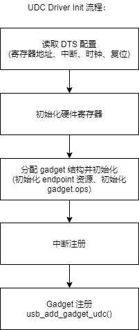
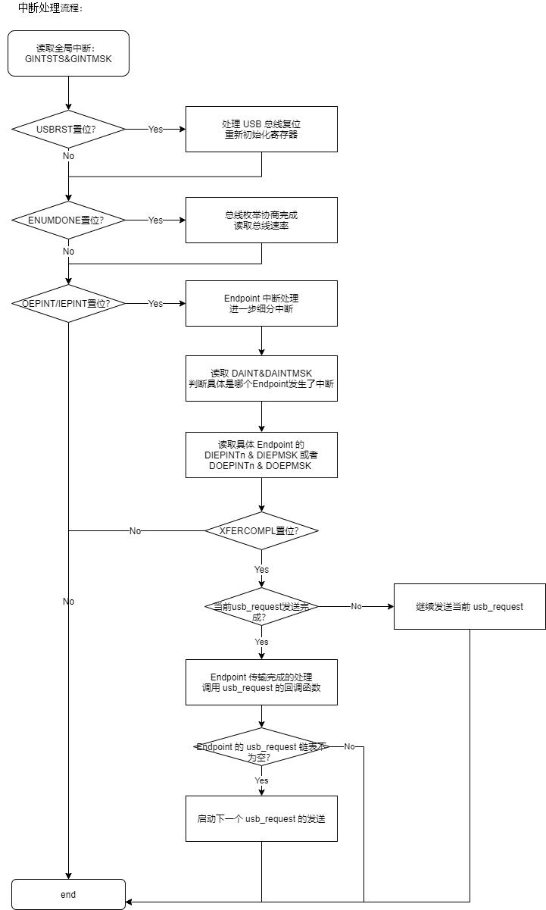
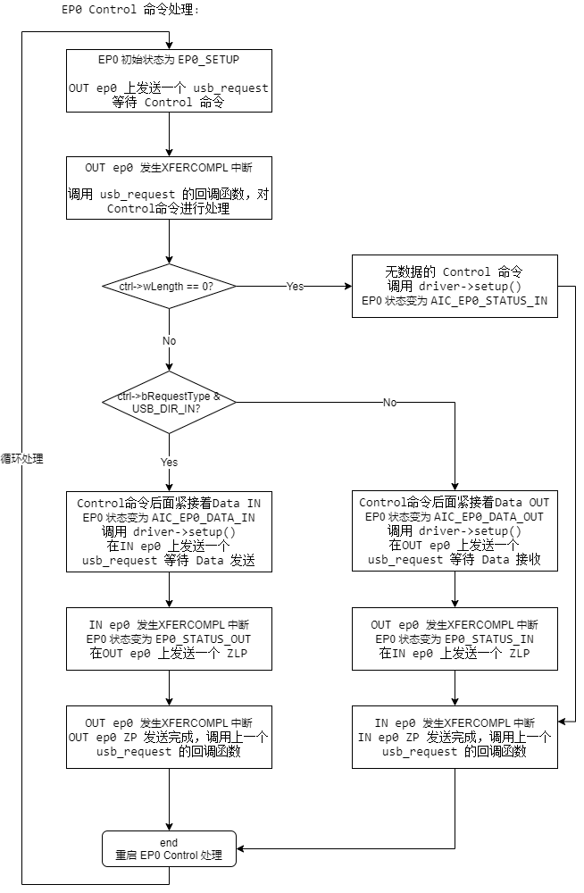

AIC UDC Driver
8 Aug 2024
Read time: 1 minute(s)
UDC Driver 在需要完成的工作有两点：
-
把 UDC 硬件注册成标准的 Gadget Device，以便提供标准的 Gadget API 给 Gadget Function 驱动来使用。
-
提供 endpoint 资源池，处理 endpoint 层级的数据收发。
-
需要处理部分 Endpoint0 Setup 逻辑。
Init

UDC 驱动把资源初始化好以后，注册成一个标准的 gadget 设备。
gadget.ops
UDC 驱动需要提供 gadget 设备的操作函数集 gadget.ops。简单定义如下：
staticconststructusb_gadget_opsaic_usb_gadget_ops={.get_frame=aic_gg_getframe,.udc_start=aic_gg_udc_start,.udc_stop=aic_gg_udc_stop,.pullup=aic_gg_pullup,.vbus_session=aic_gg_vbus_session,.vbus_draw=aic_gg_vbus_draw,};
其中的核心函数为 .udc_start() ，在调用该函数以后 UDC 才真正进入工作状态。其主要流程如下：

ep.ops
UDC 驱动需要提供 endpoint 的操作函数集 ep.ops。简单定义如下：
staticconststructusb_ep_opsaic_usb_ep_ops={.enable=aic_ep_enable,.disable=aic_ep_disable,.alloc_request=aic_ep_alloc_request,.free_request=aic_ep_free_request,.queue=aic_ep_queue_request,.dequeue=aic_ep_dequeue_request,.set_halt=aic_ep_sethalt,};
其中 .queue() 函数负责接收 Gadget Function 驱动发送下来的
usb_request。其主要流程如下：

Interrupt
UDC 驱动主要承担的是数据收发，在上一节收到 usb_request
请求以后，接下来就是等待硬件处理完成产生中断了。中断处理的主要流程如下：

EP0 Setup
UDC 驱动还有一项重要工作就是负责 EP0 Control 状态机的处理。USB ep0 上的 Control Transfer 处理分为 3 个阶段：
Setup Stage 、 Data In/Out Stage 、
Status In/Out Stage 。具体对应以下 5 种状态：
/*Gadgetep0states*/enumep0_state{EP0_SETUP,EP0_DATA_IN,EP0_DATA_OUT,EP0_STATUS_IN,EP0_STATUS_OUT,};
这几种状态之间的转换流程如下所示：
